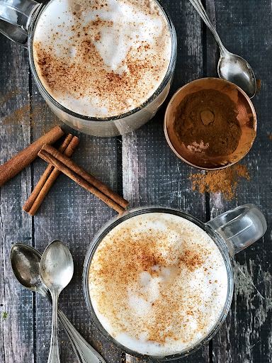

Almond Milk Chai Latte

This creamy and delicious Almond Milk Chai Latte is so good and you wouldn’t even know it’s dairy-free! Honestly! The blend of cinnamon, ginger, cloves and cardamom simmered in almond milk is incredible. Before serving I like to top it off with a little frothy almond milk too. Oh yes, you can certainly froth almond milk. I have a nifty little aerocinno milk frother that is amazing. If you ask me it’s a must-have for any coffee drinker (decaf coffee drinkers included!)
Ingredients
- 2 cups almond milk unsweetened or vanilla
- 2 tbsp raw honey
- 1/2 tsp ground cinnamon
- 1/2 tsp ground ginger
- 1/2 tsp pure vanilla extract
- 1/4 tsp ground cardamom
- 1/4 tsp ground cloves
- 1 cinnamon stick
- 2 black tea bags
Steps
- In a small saucepan add almond milk, honey, cinnamon, ginger, vanilla, cardamom, cloves and cinnamon.
- Heat over medium heat stirring occasionally until liquid comes to a low boil.
- Remove from heat and add tea bags.
- Let tea steep for 2-3 minutes.
- Remove tea bags and ladle hot tea into mugs and enjoy warm.